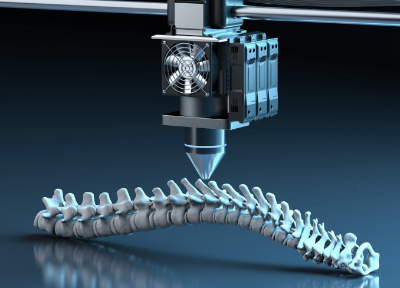
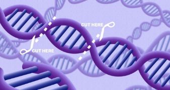

Internet of Things
The Internet of Things is a term coined to refer to the interconnection of everyday physical objects to the internet. An example would be an automatic animal feeder that can be controlled by a smartphone
Disruptive Technology
Disruptive technology refers to innovations that significantly alter an existing industry. These technologies often replace established products, or processes, leading to a fundamental shift in the way businesses operate. An example would be 3D printing. 3D printing allows for big advances in very diverse areas: electronic engineering, architecture, and medicine.
Converging Technology
Converging technology refers to the collaboration of different technologies to create new solutions or products. This integration often leads to innovations that go beyond the capabilities of each technology on its own. An example of this would be a smartphone because of various technologies such as mobile communication, computing power, touchscreens, cameras, sensors, and internet connectivity within the phone
Emerging Technology
Emerging technology refers to innovations or advancements in various fields that are in the early stages of development and have the potential to significantly impact industries, society, and daily life. Biotechnology like CRISPR-Cas9 is an emerging technology in biotechnology that enables precise modification of genes. It allows scientists to edit DNA sequences with unprecedented accuracy.
